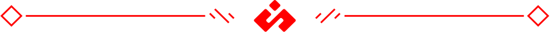

About
Hi, I'm Samuel Tyler.
I've been a digital artist and developer since 2014.
Today, I have experience with animation, 3D modeling, information science, biochemistry, and pharmacy. Ask me anything.
Hi, I'm Samuel Tyler.
I've been a digital artist and developer since 2014.
Today, I have experience with animation, 3D modeling, information science, biochemistry, and pharmacy. Ask me anything.